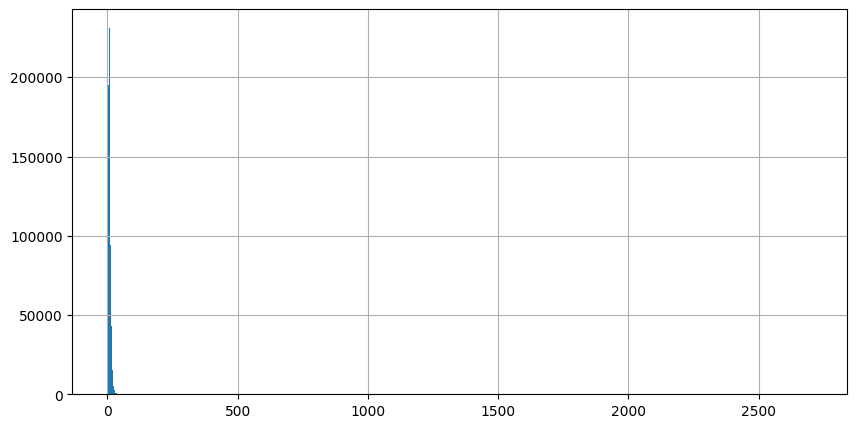

Of course, just detecting OCR mistakes doesn’t quite cut it. It is the corrections we are interested in! Since a correction model needs to be trained from scratch, I start simple. The goal is not to get high performance, but to get a basic model architecture and training pipeline that can be improved upon.

The Data
The input data for the basic correction model consists of all unique pairs of ocr mistakes and their corrections. Please note that while this dataset does contain all possible correction options for an ocr mistake, the frequency of mistakes and the context in which they occur are not taken into account.
The code for generating the dataset can be found in this notebook. Much of the required functionality can be found in my ocrpostcorrection package. OCR mistakes and corrections can be extracted from a Text object by looping over the AlignedTokens and extracting those for which the OCR text and GS differ. The get_tokens_with_OCR_mistakes() function does just that:
from pathlib import Path
import pandas as pd
from ocrpostcorrection.icdar_data import generate_data
from ocrpostcorrection.error_correction import get_tokens_with_OCR_mistakes
in_dir = Path('/path/to/ICDAR/2019/training/dataset')
data, md = generate_data(in_dir)
in_dir = Path('/path/to/ICDAR/2019/test/dataset')
data_test, md_test = generate_data(in_dir)
pd.read_csv(Path('path/to/validation/files'), index_col=0)
val_file_names = list(X_val.file_name)
data = get_tokens_with_OCR_mistakes(data, data_test, val_file_names)When applied to the ICDAR 2019 competition on post-OCR text correction dataset, the result is a pandas DataFrame containing 1,853,825 OCR, GS pairs divided over the train, val and test set. After dropping duplicates (on subset level) there are 1,130,067 pairs left.
data = data.drop_duplicates(subset=['ocr', 'gs', 'dataset'])| Subset | With duplicates | Without duplicates |
|---|---|---|
| Train | 1,323,937 | 760,429 |
| Val | 145,425 | 105,203 |
| Test | 384,463 | 264,435 |
The table below shows a sample of English OCR, GS pairs from the train set.
| ocr | gs | len_ocr | len_gs |
|---|---|---|---|
| js)Cf | Her | 5 | 3 |
| rest) | rest, | 5 | 5 |
| four, | sour, | 5 | 5 |
| Tbe | be | 3 | 2 |
| thev | they | 4 | 4 |
To get an idea of the distribution of the lengths of the OCR and GS strings, the following table lists descriptive statistics.
| len_ocr | len_gs | |
|---|---|---|
| mean | 9.11 | 8.72 |
| std | 10.36 | 7.75 |
| min | 1 | 0 |
| 25% | 6 | 6 |
| 50% | 8 | 8 |
| 75% | 11 | 11 |
| max | 3255 | 2986 |
The lenghts of OCR and GS strings are quite comparable; the means and standard deviations do not differ that much. There seem to be some outliers, i.e., very long OCR/GS strings. The next table shows some samples of very long OCR strings.
| ocr (truncated) | gs | len_ocr | len_gs |
|---|---|---|---|
| 1 45 ] 5 20 ih 1 43 ’7 30 5 5 sets 4.1 IQ N 67 A 18)39 21 2 -i> 25 s8 22 9 3 2 1 36 24 4 Perhapsthey (…) | 127. | 1447 | 4 |
| blijvende Leer aren, (want de Labadisten , dezelfde beginfels heb bendé, maar ze in de praktijk ook (…) | PHILADELPHUS | 1043 | 12 |
| Ttget t aut terret: StUla, Scylla: • %ptewacy, P siacy. • Sy la, Scylla: • Mik s, Malusi •- I H* Puisćiy Iz aćhtom (…) | TERMINACH | 665 | 9 |
| tono? Gracioso. Vale también chistoso, agudo , lle no de donáire y gracia. Lat. Facetus. Lepidus. Festivas. Lop. (…) | tono? | 540 | 5 |
| Señal de Cosín (4>) de 40° 28’ i 3” Los datos para el calculo fon Altura del centro del Sol 1 4$ Refracción (…) | Señal | 504 | 5 |
While the OCR strings are very long, the GS strings are much shorter. Clearly, these are bad examples for learning to correct OCR mistakes and should be removed from the data. This will be done by setting a threshold on OCR and GS string length. The threshold will be selected by looking at the histograms of the lengths of the OCR strings. (The histograms of the lenghts of the GS strings are very comparable, and have been omitted.)

As became apparent from the descriptive statistics, most OCR strings are short. However, the scale of the figure makes it hard to determine an appropriate threshold. Cutting off the peak makes it a little easier to see the distribution of OCR lengths.
As lengths over 500 characters are very infrequent, they are ignored in the next histogram.
The next histogram is zoomed in to a string length of 100 characters.
As there are still over 5000 examples of OCR strings with a length of 22, and then the frequencies drop quickly, the length of 22 characters is selected as threshold. The same threshold was picked for the GS.
The next steps are to create a pytorch Dataset and DataLoader. To convert the tokens into tensors, we need vocabularies and conversion functions.
First, the train and validation set are selected:
train = data.query('dataset == "train"')
val = data.query('dataset == "val"')And used as input for a pytorch Dataset:
from torch.utils.data import Dataset
class SimpleCorrectionDataset(Dataset):
def __init__(self, data, max_len=10):
self.ds = data.query(f'len_ocr <= {max_len}').query(f'len_gs <= {max_len}').copy()
self.ds = self.ds.reset_index(drop=False)
def __len__(self):
return self.ds.shape[0]
def __getitem__(self, idx):
sample = self.ds.loc[idx]
return [char for char in sample.ocr], [char for char in sample.gs]The SimpleCorrectionDataset selects all OCR, GS pairs of a certain length (__init__) and returns individual samples. For this dataset, a sample consist of a list containing the characters in the OCR string and a list containing the characters in the GS string (__getitem__).
These lists of characters must be converted to tensors, the EOS token has to be added and the samples need to be batched. The code for doing these transformations is based on this pytorch language translation tutorial.
To convert characters to numbers, vocabularies are created from the train set.
from ocrpostcorrection.error_correction import generate_vocabs, get_text_transform
vocab_transform = generate_vocabs(train)
text_transform = get_text_transform(vocab_transform)The generate_vocabs() function returns a dictionary containing two torchtext.Vocabs, one containing for converting OCR texts into numbers and one for converting GS texts into numbers.
Get_text_transforms() returns functions for converting OCR or GS text into tensors:
text_transform = get_text_transform(vocab_transform)
print(text_transform['ocr'](['t', 'e', 's', 't']))
print(text_transform['gs'](['t', 'e', 's', 't']))Which results in:
tensor([ 6, 4, 20, 6, 3])
tensor([ 8, 4, 17, 8, 3])The different numbers in the tensors show that the OCR and GS vocabulary differ. The last element of the tensors (3) refers to the special ‘End of Sequence’ (EOS) character index.
from torch.utils.data import DataLoader
from ocrpostcorrection.error_correction import SimpleCorrectionDataset, collate_fn
max_len = 22
batch_size = 256
train_dataset = SimpleCorrectionDataset(train, max_len=max_len)
train_dataloader = DataLoader(train_dataset, shuffle=True, batch_size=batch_size, collate_fn=collate_fn(text_transform))
val_dataset = SimpleCorrectionDataset(val, max_len=max_len)
val_dataloader = DataLoader(val_dataset, batch_size=batch_size, collate_fn=collate_fn(text_transform))After setting the maximum character length of the OCR and GS strings and choosing a batch size, the datasets and data loaders are created. Creating the data loaders requires a collate_fn that applies the text_transforms and adds padding for a batch of GS/OCR pairs. The exact implementation can be found in the ocrpostcorrection package.
The resulting train set contains 744,738 samples, and the validation set contains 103,272 samples. The test set and data loader are created in the same way. The test set contains 203,151 samples.
The Model
The model is a seq2seq model taken from a pytorch tutorial on machine translation. It consists of an RNN encoder and an RNN decoder with attention. The encoder and decoder have been combined into the ocrpostcorrection.error_correction.SimpleCorrectionSeq2seq model class.
The model was created as follows:
import torch
hidden_size = 256
dropout = 0.1
teacher_forcing_ratio = 0.5
device = torch.device("cuda" if torch.cuda.is_available() else "cpu")
model = SimpleCorrectionSeq2seq(len(vocab_transform['ocr']),
hidden_size,
len(vocab_transform['gs']),
dropout,
max_len,
teacher_forcing_ratio=0.5,
device=device)
model.to(device)Training
The model is trained with the following code:
optimizer = torch.optim.Adam(model.parameters())
msp = out_dir/'model.rar'
train_model(train_dl=train_dataloader,
val_dl=val_dataloader,
model=model,
optimizer=optimizer,
model_save_path=msp,
num_epochs=25,
valid_niter=1000,
max_num_patience=5,
max_num_trial=5,
lr_decay=0.5,
device=device)The complete train_model() method can be found in the training notebook. It uses learning rate decay and early stopping. Also, the model is saved only when the loss on the validation set is lower than for the previous best model.
The best model was saved after 49,000 iterations (~17 epochs). For this model, the loss on the train set is 9.34 and 8.45 on the validation set. It may seem strange that the loss on the train set is higher than the loss on the validation set. This has to do with the fact that the loss on the train set is measures with dropout, while the loss on the trainset is measured without dropout. (See this blog post for reasons why the validation loss may be below the train loss.)
Results
The code for generating predictions for the test set can be found in the icdar-task2-seq2seq-evaluation notebook. First a dataset and data loader are created:
max_len = 22
batch_size = 256
test_dataset = SimpleCorrectionDataset(test, max_len=max_len)
test_dataloader = DataLoader(test_dataset, batch_size=batch_size, collate_fn=collate_fn(text_transform))Next, the model is loaded:
model_save_path = data_base_dir/'results'/'simple_correction_model_2023-01-14'/'model.rar'
checkpoint = torch.load(model_save_path, map_location=torch.device(device))
model.load_state_dict(checkpoint['model_state_dict'])
optimizer.load_state_dict(checkpoint['optimizer_state_dict'])
model = model.to(device)Subsequently, ocrpostcorrection.error_correction.validate_model is used to calculate the loss on the test set.
from ocrpostcorrection.error_correction import validate_model
validate_model(model, test_dataloader, device)The result is 9.43, which is slightly higher than the loss on the train set.
Finally, the model is used to generate predictions for the test set:
from ocrpostcorrection.error_correction import predict_and_convert_to_str
predictions = predict_and_convert_to_str(model, test_dataloader, vocab_transform['gs'], device)The predictions are stored in a pandas DataFrame:
test_results = test.query(f'len_ocr <= {max_len}').query(f'len_gs <= {max_len}').copy()
test_results['pred'] = predictionsThe code for analyzing the results can be found in a separate notebook. To assess performance, the mean edit distance between the OCR and GS strings is compared to the mean edit distance between the OCR and predicted strings:
import edlib
test_results['ed'] = test_results.apply(lambda row: edlib.align(row.ocr, row.gs)['editDistance'], axis=1)
test_results['ed_pred'] = test_results.apply(lambda row: edlib.align(row.pred, row.gs)['editDistance'], axis=1)The results are summarized in the following table.
| Edit distance | mean | std | min | 25% | 50% | 75% | max |
|---|---|---|---|---|---|---|---|
| OCR -> GS | 2.99 | 2.26 | 1 | 1 | 2 | 4 | 22 |
| OCR -> pred | 2.11 | 2.53 | 0 | 0 | 1 | 3 | 23 |
The mean edit distance dropped from 2.99 to 2.11. The table shows that the model is correctly predicting the GS string for at least 25% of the samples. On the other hand, the maximum edit distance increases with 1. So, while the model corrects some OCR strings, it worsens the edit distance for others.
There are four possible result types for individual strings:
- correct prediction (edit distance is 0)
- edit distance improved
- no change
- prediction is equal to the OCR string
- prediction is not equal to the OCR string
- edit distance increased
Let’s count how often these different types occur.
def classify_ed_difference(row):
result = None
if row.ed_pred == 0:
result = 'correct prediction'
elif row.ed_pred < row.ed:
result = 'edit distance improved'
elif row.ed_pred == row.ed:
if row.ocr == row.pred:
result = 'no change (prediction equal to ocr)'
else:
result = 'no change (prediction not equal to ocr)'
else:
assert row.ed_pred > row.ed
result = 'edit distance increased'
return result
data['ed_diff_class'] = data.apply(lambda row: classify_ed_difference(row), axis=1)The table below displays the raw counts and percentage of samples from the train set that belong to each type of edit distance change.
| count | % | |
|---|---|---|
| correct prediction | 76708 | 29.56 |
| edit distance improved | 71862 | 27.70 |
| no change (prediction equal to ocr) | 31597 | 12.18 |
| no change (prediction not equal to ocr) | 38762 | 14.94 |
| edit distance increased | 40537 | 15.62 |
Almost 30% of the OCR mistakes are corrected. Of course, these results do not take into account how often each OCR mistake occurs or how much mistakes in a complete text will be fixed. Also, it is quite likely that the model makes correct predictions for easier mistakes. This is supported by the results in the image below. This figure contains boxplots of the length of the OCR strings separated by type of edit distance change. We see that the mean OCR length of correct predictions is lower than than for the OCR mistakes for which the edit distance increased.
A more detailed analysis of the performance and errors are left for future blog posts. For now, the basic model and training pipeline are enough.